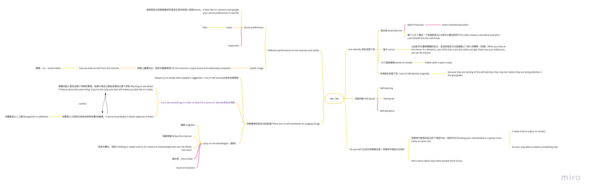

Final Project Concepts

As I mentioned in my 7 in 7 Morten, I want to shift my concept from emotion to break the social identity. I started from that point; after the brainstorming discussion with my group member, I narrowed down the direction and found a better way to approach the concept, which can be defined as we or me. "We" can be defined as the society we live in, the groups related to us. "Me" can be defined as each individual, emphasis on yourself. If we flip "We" around, it will become "Me." When we are in a "WE" environment, "ME" may lose its identity. From this perspective, I came up with 5-6 concepts I want to develop for my final project.
Concept 1：Most people have a different identity online than they do in reality. They're willing to do what they want to do and say what they want to say online, but they're afraid to do it in real life. One of the reasons behind this phenomenon is because they don't want to be treated differently in the "we" environment. So they choose to hide "me" identity. From this perspective, I come up with two directions; first is something related to personal preference on the internet. Many people have their secret preferences, they like to share and watch them online, but they feel like it's a shame to tell people their secret preferences in real life. Which is to say, lots of people are trying to hide their true self on the internet and wearing masks in the real world. It is so close to our life and could happen to any of us. So I want to use this concept as one of my directions to show the double-side of our identity.
Concept 2: Under the "We" environment, we are losing our self-standard for judging things. I consider myself a prototype in this concept because I am a typical example. I don’t have a standard on what I am doing right or wrong, that all depends on how other people think about me. I always try to do something with others in order to seek a sense of identity. When I try to do something new, I still want to ask others if they've done the same thing. If I am the only one that will make me feel like I am an outlier.But meanwhile, if someone said I did it right or gave me some positive feedback, I will have a sense of pride or joy.This is a significant conflict that we want to be heterogeneous and we like to get approval of others, but in order to get a sense of identity we will lose our self-principle from some extent. I want to make something to show this conflict in my design.
Concept3: When we put “Me” into “We”, “Me” will lose its identity. Just like a product in the assembly line that in order to pass a standard, everyone cuts himself/herself into the same shape. You might think that there is nothing wrong with it, because everyone is the same. But you are not yourself anymore, you can be anyone. Maybe some people want to avoid trouble because following other’s paths is easy. Someone just lacks self-identity they may not realize there is a problem with it. I want to reflect on common phenomena and maybe try to help people find their identity.Each of us is colorful, we all have different shapes, we need to know that.
Concept 4: When we are doing something different from others, we may even fall into self-doubt. Why? Have I done anything wrong? We may blame ourselves. Sometimes this kind of self-doubt and blame can lead to a positive outcome. Sometimes it will put you into a strange circle. I want to start from this point and try to reflect on this topic to see what I can do with it.
Concept 5: Is that possible to still be "ME" under the "WE" situation? Trying to ignore others' eyes is kind of hard, but there are still lots of people trying to be themselves and explore their path. Showing individuality in a group must come at some cost, but it is always accompanied by innovation. From this perspective, I want to focus on being yourself, trying to make something that shows people's strong identification, and making it appealing and persuasive to other people.
Go Back